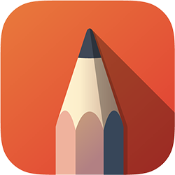

Procreate  |
- One time payment, no subscriptions or in app purchases
- Array of brushes. Procreate has many cool brushes already in its library but you can download more brushes created by other people. The brushes are also customizable and you can change their properties.
- Smooth workflow, barley any lag when zooming in and out, fliiping and rotating the canvas, and drawing with the pencil.
- There is a timelapse feature in the app which allows for reviwing the process of drawing. This allows for simple access to recordings without a specialized video recording program.
- Procreate has many formats; PSD, TIFF, PNG, PDF, GIF, and JPEG files which allows for export half finished work and continue working on a computer.
|
- Exclusivley for iPad and iPhone
- Clipping masks similar to Photoshop.
- No vectors, you cannot achieve the same 'smoothness' of the line in Procreate.
- Colors can be changed on idividual layers but cannot change the color of the entire document.
- The amount of layers directly depends on the size of the canvas and the model of iPad you are using.
- No gradient tool but can use the gussian blur to create smooth transitions between colors.
- Procreate has many hidden tricks that can be stumbled upon by chance or by reseraching them.
|
| Sketchbook  |
- Easy to use and navigable
- Many options for burshes and can dowload brushes into app
- Pro version is a onetime payment
- Formats; PSD, TIFF, PNG, PDF, JPEG files allows for export of work
|
- Limited features on the free version of the app
- No vector tool
|